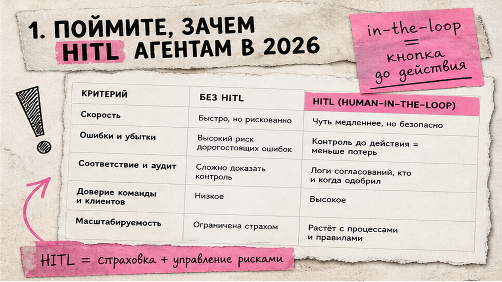
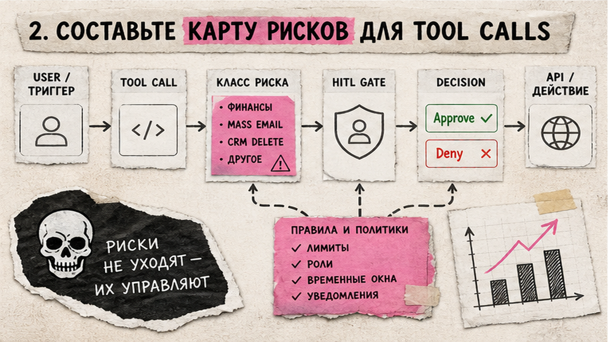
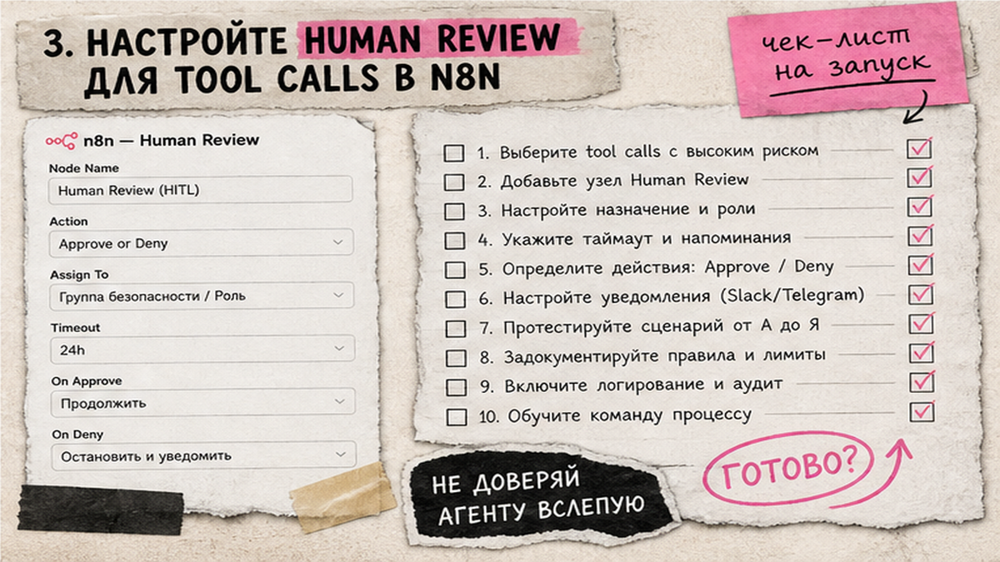

ИИ-агент уже умеет списать деньги, удалить контакт в CRM или отправить письмо клиенту - и вы узнаете об этом постфактум. Human-in-the-loop (HITL, "человек в контуре") - пауза перед опасным действием: агент предлагает tool call, вы жмёте Approve или Deny, и только потом система что-то меняет. Ниже - карта рисков и настройка human review в n8n, Make и Cursor. После чтения вы включите контроль на платежах, письмах и деплое и пройдёте чек-лист из 25+ пунктов перед продакшеном.
TL;DR / Быстрый инсайт: HITL - контрольная точка между решением агента и реальным API-вызовом. В n8n 2.6+ native human review на connector к tool: Approve выполняет, Deny отменяет. Make: native HITL только Enterprise; иначе webhook split. Cloud Agents Cursor не спрашивают approve на шаг - контроль через branch protection и PR review. Запросы "n8n ai" (720/мес) и "n8n агенты" (699) из семантики B02 подтверждают спрос на контроль агентов.
Tool - "рука" нейросети: HTTP в CRM, email, charge в Stripe. API (Application Programming Interface) - "розетка" связи n8n или Make с внешним сервисом. Без HITL агент ошибается молча: автономные ИИ завершают менее 2,5% сложных задач без человека, до 40% пилотов срываются из-за скрытых затрат (открытые обзоры 2026).
EU AI Act для high-risk систем требует human oversight (ст. 14): человек понимает limits модели, замечает сбои, может остановить процесс. Ниже - ориентир для чек-листа, не legal advice; дедлайн compliance для high-risk - 2 декабря 2027.

HITL - страховка при необратимом side effect: деньги списаны, письмо ушло, контакт удалён. Human-on-the-loop - наблюдение логов без approve на каждый шаг; подходит для read-only (search KB, get record). Разница простая: in-the-loop - вы жмёте кнопку до действия; on-the-loop - вы смотрите дашборд и вмешиваетесь при аномалии.
Типичная ошибка - включить HITL "на всё" и через неделю снять, потому что Slack завален. Начните с трёх классов из risk-map: финансы, mass email, CRM delete.
Делайте: gate на write/delete и исходящие comms. Не делайте: approve на каждый get/search - команда отключит контроль.

Выпишите workflows (n8n, Make, Cursor) и каждый tool с побочным эффектом. Классифицируйте по таблице:
| Класс | Примеры | HITL | Платформа |
|---|---|---|---|
| Финансы | charge, refund | Обязательно | n8n / Make webhook |
| Comms | email, Slack, SMS | + preview текста | $tool.parameters |
| CRM write/delete | update deal, delete | Обязательно | n8n / Router |
| Delete data | DB delete, file | Deny by default | n8n gate |
| Read-only | search, get | Не нужен | logging |
| Deploy | merge PR | Reviewers + CI | Cursor/GitHub |
Делайте: owner risk-map и пересмотр раз в квартал. Не делайте: gate только в sub-workflow - parent AI Agent в n8n может resolve tool до конца sub; gate на main connector (2.6+).

Схема: AI Agent → [Human Review] → Tool → Approve/Deny branch
n8n 2.6.0 (26.01.2026): native HITL на CE без execution cap. Каналы: Chat, Slack, Telegram, Teams, Gmail и др. (9 штук).
Для review текста ответа (не tool): Chat node "Send a message and wait for response" - workflow стоит, пока человек не ответит. Wait node + Slack/Telegram - запасной путь на старых версиях n8n.
Webhook (входящий URL-триггер) можно повесить на approve из внешней CRM, если reviewer работает только там. Главное - signed resume token или одноразовая ссылка, чтобы посторонний не нажал Approve.
Делайте: лог execution id, tool params, reviewer, decision, timestamp в n8n execution log или внешнюю таблицу. Не делайте: delete-tools без Deny by default; не прячьте gate в sub-workflow, если AI Agent вызывает его как tool.
Native app "Human in the loop" (Create/Cancel/Watch/List) execute только Enterprise. На Core/Pro - webhook workaround.
| Критерий | n8n | Make |
|---|---|---|
| Gate | Connector AI Agent → tool | Create review request |
| Тариф | CE + Cloud | Enterprise для execute |
| Workaround | Wait + webhook | Split + approve links |
Make AI Agents GA (11.02.2026) даёт Reasoning Panel - смотрите, как модель выбирала tools, перед тем как разрешить следующий шаг. На Enterprise Create review request вставьте между агентом и модулем Stripe, Gmail или CRM.
Базовая сборка агентов - в гайде n8n и Make AI Agents. Делайте: одноразовые approve links с TTL. Не делайте: native Make HITL без проверки Enterprise на billing.
Run Modes (Auto-review) - только local agents (Cursor 3.6+). Cloud Agents без per-action approve: clone repo, push branch, PR. HITL = branch protection + reviewers + CI.
Cursor Automations (webhook, Slack, GitHub, Linear triggers) умеют Comment on PR, Request reviewers, Send to Slack - это ваш HITL-слой для облачных агентов. Auto-review в Run Modes (рекомендован с Cursor 3.6, 29.05.2026) - для локальной разработки, когда агент на вашей машине спрашивает перед shell-командой.
Webhook и quality bar - в настройке Cursor Automations 2026. Security baseline: branch protection + CI на каждый PR от cursor bot, как рекомендуют security-гайды по Cloud Agents. Не путайте Run Modes локального агента с Cloud Agent без per-action approve.
Graduation to autonomy - снимать gate только когда N прогонов на sandbox без инцидентов, error rate ниже порога, audit trail чистый и compliance дал sign-off. Payments, refund и delete - отдельная политика: gate не снимаем "потому что надоело кликать".
Зафиксируйте kill switch: кто останавливает workflow, revokes API key и пишет post-mortem за 24 часа. Для EU AI Act выпишите per agent: in-the-loop (approve каждого tool) или on-the-loop (мониторинг + override).
Практика цепочек с HITL на живых кейсах - в курсе Make.com и вайбкодинг (159+ уроков, no-code + Cursor).
Материал проверен: эксперт Артур Хорошев (CEO Maya AI, автор курса по Make.com и вайбкодингу).
Достоверность данных: n8n 2.6, Make Enterprise HITL, EU AI Act Art. 14, Cursor Automations - docs на 29.08.2026; "n8n ai" (720), "n8n агенты" (699) - Вордstat B02, июнь 2026.
Checkpoint: агент предлагает action → Approve/Deny → tool выполняется или отменяется. Поставьте gate на connector в n8n до prod.
AI Agent → "+" на tool → Add human review step → Slack/Telegram → $tool.name, $tool.parameters → system prompt про Deny.
n8n: native gate на CE/Cloud. Make: native только Enterprise; иначе webhook split. См. таблицу в секции 4.
High-risk (Annex III): ст. 14 требует oversight. Остальное - best practice; при legal effects - GDPR Art. 22. Документируйте per agent.
Да. HITL = branch protection, PR review, CI, Automations quality bar. Run Modes - только local agent.
Список gated tools, поведение при Deny, запрет повторного подтверждения того, что уже за gate.
После N sandbox runs, низкого error rate, чистого audit. Payments/delete - только с compliance sign-off.